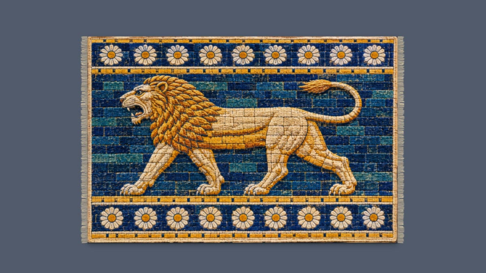
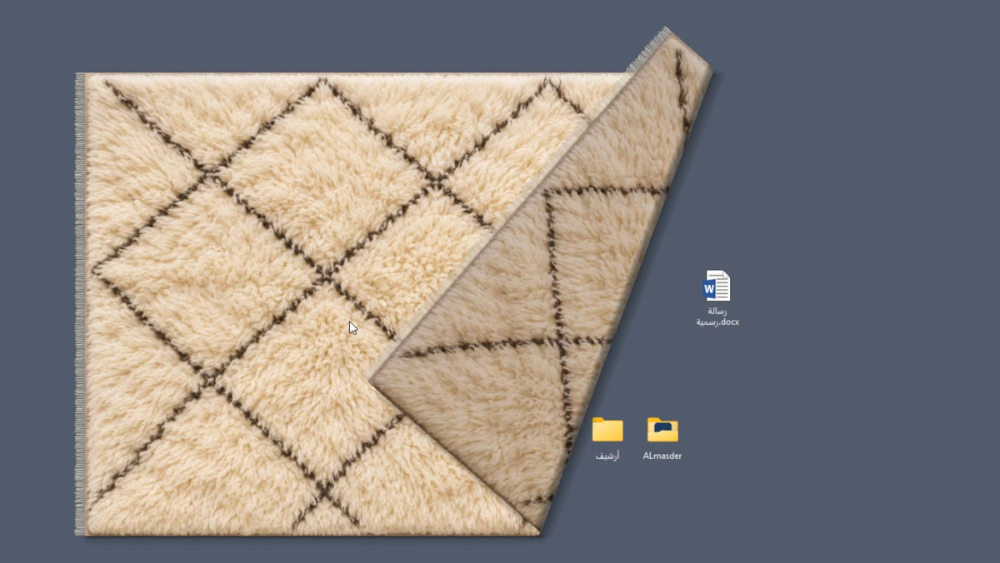
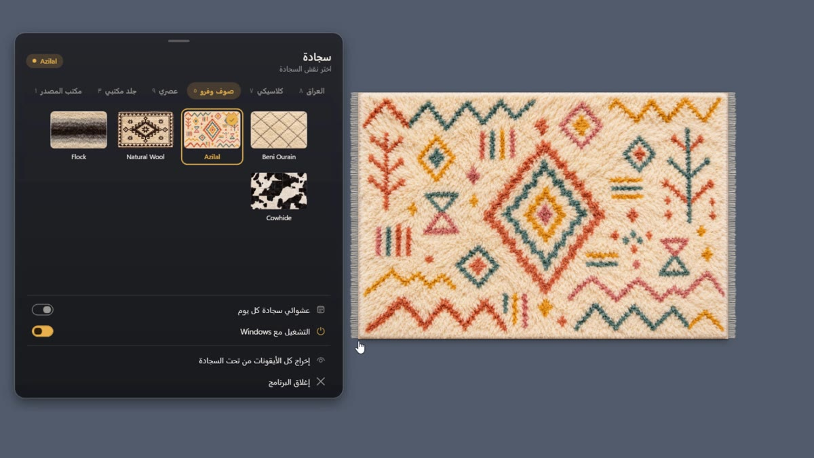
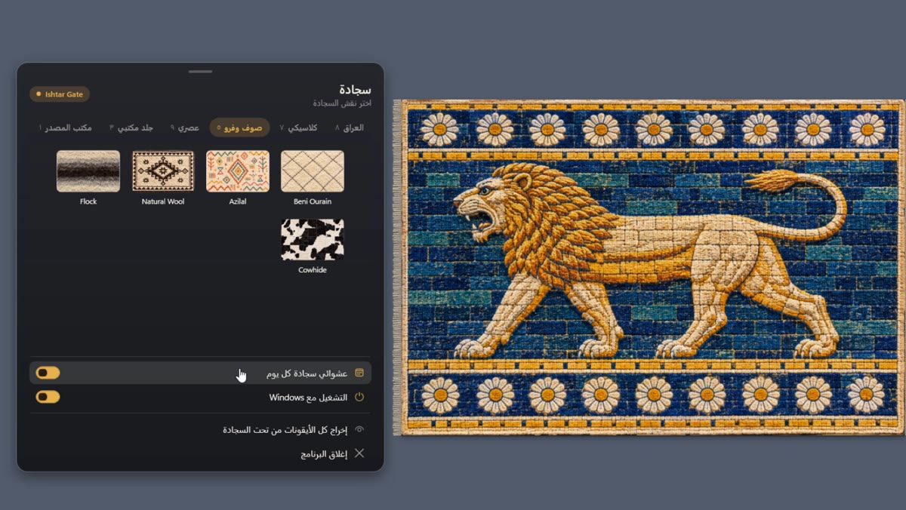

نظّم سطح مكتبك
وأخفِ ملفاتك عن الأعين
يُخفي «سجادة» أيقونات سطح المكتب تحت سجادة أنيقة، فيبدو سطح المكتب مرتّبًا وتبقى ملفاتك بعيدة عن أنظار من يشاهد شاشتك، دون نقل أي ملف أو حذفه أو تعديله.
يعمل تمامًا كالسجادة الحقيقية
أدوات بسيطة وواضحة، تمنحك سطح مكتب منظّمًا خلال ثوانٍ.

اسحب الأيقونة وأفلتها على السجادة
تختفي الأيقونة تحت السجادة فورًا، بينما يبقى الملف في مكانه على سطح المكتب دون أي تغيير. كل ما يتغيّر هو موضع الأيقونة على الشاشة.

حرّكها وغيّر حجمها بحرّية
عند تحريك السجادة تبقى الأيقونات في أماكنها، فتظهر الأيقونات التي كانت تحتها، كما يحدث مع السجادة الحقيقية تمامًا. ويمكنك تكبيرها أو تصغيرها بسحب أطرافها.

ارفع الزاوية للوصول إلى ملفاتك
ارفع زاوية السجادة لتظهر الأيقونات المخفية تحتها، ثم افتح ما تحتاجه أو اسحبه إلى خارجها كالمعتاد.

أخرج جميع الأيقونات بنقرة واحدة
من القائمة اختر «إخراج كل الأيقونات من تحت السجادة»، فتعود كل أيقونة إلى مكانها السابق.

معرض تصاميم متكامل
انقر بزر الفأرة الأيمن على السجادة ليظهر معرض يضم جميع التصاميم مقسّمة إلى أقسام، واختر التصميم الذي يناسبك بنقرة واحدة.
- ✓معالم عراقية وتصاميم كلاسيكية
- ✓صوف وفرو، وتصاميم عصرية
- ✓ألواح جلد مكتبية فاخرة

سجادة جديدة كل يوم
فعّل خيار «عشوائي سجادة كل يوم»، وستستقبلك سجادة بتصميم مختلف في كل يوم تشغّل فيه حاسوبك.
أكثر من ٣٠ تصميمًا
من بوابة عشتار وقلعة أربيل، إلى الكليم والصوف والجلد الفاخر.
ملفاتك في أمان تام
صُمّم البرنامج ليغطي الأيقونات فقط، دون أن يقترب من ملفاتك.
لا ينقل ملفاتك
تبقى جميع الملفات في مكانها على سطح المكتب.
لا يحذف ولا يعدّل
لا يمسّ البرنامج محتوى أي ملف إطلاقًا.
يتغيّر موضع الأيقونة فقط
كل ما يتغيّر هو مكان الأيقونة على الشاشة.
لا يحتاج إلى إنترنت
يعمل بالكامل على جهازك دون أي اتصال.
دون صلاحيات المسؤول
يُثبَّت ويعمل بصلاحيات المستخدم العادية.
لا يضيع شيء عند الإغلاق
إذا أغلقت البرنامج تظهر الأيقونات في أماكنها، وتعود مغطّاة عند تشغيله مجددًا.
كود مفتوح للجميع
شيفرة البرنامج منشورة على GitHub، ويستطيع أي مبرمج الاطلاع عليها. تصفّح الكود ←
ابدأ في أقل من دقيقة
حمّل البرنامج
اضغط زر «تحميل البرنامج مجانًا». إذا نبّهك المتصفح إلى أن الملف غير شائع، اختر «الاحتفاظ».
شغّل ملف التثبيت
افتح الملف Sajjada-Setup.exe واتبع الخطوات حتى ينتهي التثبيت.
ألغِ الترتيب التلقائي
انقر بزر الفأرة الأيمن على سطح المكتب، ثم «عرض»، وألغِ تحديد «ترتيب الأيقونات تلقائيًا».
اختر سجادتك
تظهر السجادة على سطح المكتب. انقر عليها بالزر الأيمن لاختيار التصميم الذي تفضّله.
هل ظهرت لك رسالة من Windows؟
تُظهر Windows هذه الرسالة عند تشغيل أي برنامج جديد غير منتشر بعد، وهذا أمر طبيعي ولا يعني وجود خطر. اضغط More info ثم Run anyway لمتابعة التثبيت.
Microsoft Defender SmartScreen prevented an unrecognized app from starting.
More infoإجابات سريعة
هل البرنامج مجاني؟
نعم، البرنامج مجاني بالكامل، دون إعلانات أو اشتراكات.
كيف أخفي أيقونات سطح المكتب في Windows دون حذفها؟
ثبّت «سجادة»، ثم اسحب أي أيقونة وأفلتها على السجادة فتختفي تحتها، ويبقى الملف نفسه في مكانه على سطح المكتب. وترجع كل الأيقونات بنقرة واحدة من القائمة.
هل يمكن أن يحذف البرنامج ملفاتي؟
لا. البرنامج لا ينقل أي ملف ولا يحذفه ولا يعدّله، بل يغيّر موضع الأيقونة على الشاشة فقط.
ماذا يحدث إذا أغلقت البرنامج؟
تظهر جميع الأيقونات في أماكنها على سطح المكتب، ولا يضيع أي شيء. وعند تشغيله مجددًا تعود مغطّاة كما كانت.
لماذا تظهر رسالة «Windows protected your PC»؟
تظهر هذه الرسالة لأي برنامج جديد لم ينتشر بعد على نطاق واسع. اضغط More info ثم Run anyway للمتابعة.
هل يحتاج البرنامج إلى اتصال بالإنترنت؟
لا، يعمل البرنامج بالكامل دون إنترنت، ولا يرسل أي بيانات.
ما أنظمة التشغيل المدعومة؟
يعمل البرنامج على Windows 10 و Windows 11 بنظام 64 بت.